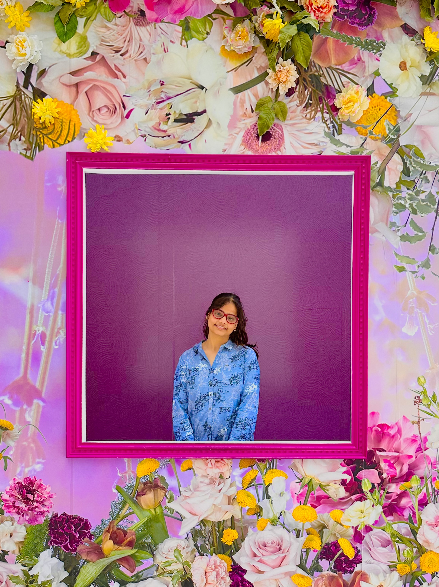

|
Shreya Shukla
I am an undergraduate student in the Department of Electrical Engineering, Indian Institute of Technology Jodhpur.
During my undergraduate, I have actively been involved in multimodal deep learning research in the Vision, Language and Learning Group (VL2G lab), advised by Dr. Anand Mishra.
I also briefly interned at University of Regina under Dr. Kin Choong Yow, through the Mitacs Globalink Research Internship 2023, and at Bosch India.
My research interests lie at the intersection of computer vision and natural language processing. Particularly, I am interested in multimodal applications involving multimodal fusion and cross-modal representation learning for images and text.
Email /
CV /
Google Scholar /
LinkedIn /
GitHub
|

|